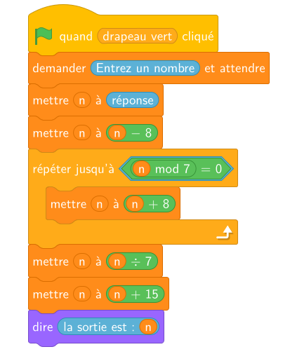

Jour 1 : Calcul, fonctions et premiers outils géométriques
Points travaillés :
- Calculer avec les nombres relatifs, les fractions et les puissances.
- Développer, réduire et factoriser une expression littérale (facteur commun).
- Utiliser le vocabulaire et les notations relatives aux fonctions (image, antécédent).
- Lire et exécuter un algorithme de calcul (organigramme, script).
- Utiliser le théorème de Pythagore, la trigonométrie et le théorème de Thalès dans un triangle.
Calcul
Calculer les expressions suivantes.
- \(A = (-3) \times [3 - (+5)]\)
Afficher la correction :
\(A = (-3) \times (3 - 5) = (-3) \times (-2) = 6\)
- \(B = 4 - [5 \times (-2) + (+2)]\)
Afficher la correction :
\(B = 4 - (-10 + 2) = 4 - (-8) = 4 + 8 = 12\)
- \(C = -4 \times \big[(3 + (-4)) \times (-2 - (-3))\big]\)
Afficher la correction :
\(C = -4 \times \big[(-1) \times (-2 + 3)\big] = -4 \times (-1 \times 1) = -4 \times (-1) = 4\)
- \(E = (-4) \times (-2) \times (-3) - (-3) \times (-2)\)
Afficher la correction :
\(E = (-24) - 6 = -30\)
- \(F = (+6) - (-9) + (-3) \times \big[(-5) \times (-2) - 3\big]\)
Afficher la correction :
\(F = 6 + 9 + (-3) \times (10 - 3) = 15 + (-3) \times 7 = 15 - 21 = -6\)
- \(H = (-3) + (-4) \times (-6) + (-21) : (-7)\)
Afficher la correction :
\(H = (-3) + 24 + 3 = 21 + 3 = 24\)
Calculer et donner le résultat sous une forme irréductible.
- \(A = \dfrac{9}{5} - \dfrac{7}{5}\)
Afficher la correction :
\(A = \dfrac{9}{5} - \dfrac{7}{5} = \dfrac{9 - 7}{5} = \dfrac{2}{5}\)
- \(B = \dfrac{4}{6} + \dfrac{11}{6} - \dfrac{5}{6}\)
Afficher la correction :
\(B = \dfrac{4}{6} + \dfrac{11}{6} - \dfrac{5}{6} = \dfrac{4 + 11 - 5}{6} = \dfrac{10}{6} = \dfrac{5}{3}\)
- \(C = \dfrac{4}{15} + \dfrac{2}{5} - \dfrac{7}{30}\)
Afficher la correction :
\(C = \dfrac{4}{15} + \dfrac{2}{5} - \dfrac{7}{30} = \dfrac{8}{30} + \dfrac{12}{30} - \dfrac{7}{30} = \dfrac{8 + 12 - 7}{30} = \dfrac{13}{30}\)
- \(D = \dfrac{5}{7} - \left(\dfrac{3}{2} - \dfrac{5}{4}\right)\)
Afficher la correction :
\(D = \dfrac{5}{7} - \left(\dfrac{3}{2} - \dfrac{5}{4}\right) = \dfrac{5}{7} - \left(\dfrac{6}{4} - \dfrac{5}{4}\right) = \dfrac{5}{7} - \dfrac{1}{4} = \dfrac{20}{28} - \dfrac{7}{28} = \dfrac{13}{28}\)
- \(E = \left(\dfrac{4}{3} + \dfrac{5}{2}\right) - \left(\dfrac{3}{2} + \dfrac{7}{4}\right)\)
Afficher la correction :
\(E = \left(\dfrac{4}{3} + \dfrac{5}{2}\right) - \left(\dfrac{3}{2} + \dfrac{7}{4}\right) = \left(\dfrac{8}{6} + \dfrac{15}{6}\right) - \left(\dfrac{6}{4} + \dfrac{7}{4}\right) = \dfrac{23}{6} - \dfrac{13}{4} = \dfrac{46}{12} - \dfrac{39}{12} = \dfrac{7}{12}\)
- \(F =\dfrac{1}{3} + \dfrac{2}{5} \times \dfrac{3}{4}\)
Afficher la correction :
\(F = \dfrac{1}{3} + \dfrac{2}{5} \times \dfrac{3}{4} = \dfrac{1}{3} + \dfrac{6}{20} = \dfrac{1}{3} + \dfrac{3}{10} = \dfrac{10}{30} + \dfrac{9}{30} = \dfrac{19}{30}\)
Calculer et donner le résultat sous une forme irréductible.
- \(A=\dfrac{(2a)^4}{4a^5}\)
Afficher la correction :
\(A = \dfrac{(2a)^4}{4a^5} = \dfrac{2^4 \times a^4}{4a^5} = \dfrac{16a^4}{4a^5} = \dfrac{16}{4} \times \dfrac{a^4}{a^5} = 4 \times a^{4-5} = 4a^{-1} = \dfrac{4}{a}\)
- \(B=(3r)^3\times(5r)^4\)
Afficher la correction :
\(B = (3r)^3 \times (5r)^4 = (3^3 \times r^3) \times (5^4 \times r^4) = (27 \times r^3) \times (625 \times r^4) = (27 \times 625) \times (r^3 \times r^4) = 16\,875 r^{3+4} = 16\,875 r^7\)
- \(C=\dfrac{n^7\times m^2}{n\times m^4}\)
Afficher la correction :
\(C = \dfrac{n^7 \times m^2}{n \times m^4} = \dfrac{n^7}{n^1} \times \dfrac{m^2}{m^4} = n^{7-1} \times m^{2-4} = n^6 m^{-2} = \dfrac{n^6}{m^2}\)
- \(D=\dfrac{\frac{x}{y^7} \times y^8}{\frac{x^4}{y}\times x^{-5}}\)
Afficher la correction :
\(D = \dfrac{\frac{x}{y^7} \times y^8}{\frac{x^4}{y}\times x^{-5}} = \dfrac{x \times \frac{y^8}{y^7}}{\frac{x^4 \times x^{-5}}{y}} = \dfrac{x \times y^{8-7}}{\frac{x^{4+(-5)}}{y}} = \dfrac{x y^1}{\frac{x^{-1}}{y}} = \dfrac{xy}{\frac{1}{x y}} = xy \times \dfrac{xy}{1} = x^2 y^2\)
- \(E=\dfrac{(ab^3)^{-4} (a^{-2}b)^2}{a^{-6}b^2}\)
Afficher la correction :
\(E = \dfrac{(ab^3)^{-4} (a^{-2}b)^2}{a^{-6}b^2} = \dfrac{\left(a^{-4} \times (b^3)^{-4}\right) \times \left((a^{-2})^2 \times b^2\right)}{a^{-6}b^2} = \dfrac{(a^{-4} b^{-12}) \times (a^{-4} b^2)}{a^{-6}b^2} = \dfrac{a^{-4+(-4)} b^{-12+2}}{a^{-6}b^2} = \dfrac{a^{-8} b^{-10}}{a^{-6}b^2} = a^{-8-(-6)} b^{-10-2} = a^{-2} b^{-12} = \dfrac{1}{a^2 b^{12}}\)
Calcul littéral
Développer et simplifier les expressions suivantes.
- \(A= 3(5x + 3) + 2(x -1)\)
Afficher la correction :
\[\begin{aligned} A &= 3(5x + 3) + 2(x - 1) \\ &= (3 \times 5x + 3 \times 3) + (2 \times x - 2 \times 1) \\ &= 15x + 9 + 2x - 2 \\ &= 17x + 7 \end{aligned}\]
- \(B = (5x - 4)(5x + 4) - (3x + 1)^2\)
Afficher la correction :
\[\begin{aligned} B &= (5x - 4)(5x + 4) - (3x + 1)^2 \\ &= \left[(5x)^2 - 4^2\right] - \left[(3x)^2 + 2 \times 3x \times 1 + 1^2\right] \\ &= (25x^2 - 16) - (9x^2 + 6x + 1) \\ &= 25x^2 - 16 - 9x^2 - 6x - 1 \\ &= 16x^2 - 6x - 17 \end{aligned}\]
- \(C = 3(4x - 2)(x + 1) - (x + 1)^2\)
Afficher la correction :
\[\begin{aligned} C &= 3(4x - 2)(x + 1) - (x + 1)^2 \\ &= 3 \times (4x^2 + 4x - 2x - 2) - (x^2 + 2x + 1) \\ &= 3 \times (4x^2 + 2x - 2) - (x^2 + 2x + 1) \\ &= 12x^2 + 6x - 6 - x^2 - 2x - 1 \\ &= 11x^2 + 4x - 7 \end{aligned}\]
Factoriser les expressions suivantes.
- \(A = 3x + 12\)
Afficher la correction :
\(A = 3x + 12 = \underline{3} \times x + \underline{3} \times 4 = 3(x + 4)\)
- \(B = 6y - 18\)
Afficher la correction :
\(B = 6y - 18 = \underline{6} \times y - \underline{6} \times 3 = 6(y - 3)\)
- \(C = 3y^{2} - 15y\)
Afficher la correction :
\(C = 3y^2 - 15y = \underline{3y} \times y - \underline{3y} \times 5 = 3y(y - 5)\)
- \(D = 7t + 7\)
Afficher la correction :
\(D = 7t + 7 = \underline{7} \times t + \underline{7} \times 1 = 7(t + 1)\)
- \(E = x(2x+3) - 4(2x+3)\)
Afficher la correction :
\(E = x(2x+3) - 4(2x+3) = x\underline{(2x+3)} - 4\underline{(2x+3)} = (2x+3)(x - 4)\)
- \(F = 3x(7-5x) + 8(7-5x)\)
Afficher la correction :
\(F = 3x(7-5x) + 8(7-5x) = 3x\underline{(7-5x)} + 8\underline{(7-5x)} = (7-5x)(3x + 8)\)
- \(G = (x+1)(3-2x) + (x+1)(5x+2)\)
Afficher la correction :
\[\begin{aligned} G &= (x+1)(3-2x) + (x+1)(5x+2) \\ &= \underline{(x+1)}(3-2x) + \underline{(x+1)}(5x+2) \\ &= (x+1)\big[(3-2x) + (5x+2)\big] \\ &= (x+1)(3 - 2x + 5x + 2) \\ &= (x+1)(3x + 5) \end{aligned}\]
- \(H = (x+7)(2x+3) - (4x-3)(2x+3)\)
Afficher la correction :
\[\begin{aligned} H &= (x+7)(2x+3) - (4x-3)(2x+3) \\ &= (x+7)\underline{(2x+3)} - (4x-3)\underline{(2x+3)} \\ &= (2x+3)\big[(x+7) - (4x-3)\big] \\ &= (2x+3)(x + 7 - 4x + 3) \\ &= (2x+3)(-3x + 10) \end{aligned}\]
- \(I = (2x-5)(x+4) - (2x-5)(3-x)\)
Afficher la correction :
\[\begin{aligned} I &= (2x-5)(x+4) - (2x-5)(3-x) \\ &= \underline{(2x-5)}(x+4) - \underline{(2x-5)}(3-x) \\ &= (2x-5)\big[(x+4) - (3-x)\big] \\ &= (2x-5)(x + 4 - 3 + x) \\ &= (2x-5)(2x + 1) \end{aligned}\]
Fonctions
On considère une fonction \(f\) telle que \(f(2)=5\). On note \(\mathscr{C}\) sa courbe représentative. Pour chaque affirmation, dire si elle est vraie, fausse, ou si l’on ne peut rien dire.
- L’image de 5 par la fonction \(f\) est 2.
Afficher la correction :
On ne peut rien dire : on ne connaît que \(f(2)\), pas \(f(5)\).
- L’image de 2 par la fonction \(f\) est 5.
Afficher la correction :
Vrai : c’est exactement la donnée \(f(2)=5\).
- Un antécédent de 5 par la fonction \(f\) est 2.
Afficher la correction :
Vrai : puisque \(f(2)=5\), \(2\) est bien un antécédent de \(5\).
- Un antécédent de 2 par la fonction \(f\) est 5.
Afficher la correction :
On ne peut rien dire : cela signifierait \(f(5)=2\), ce qui n’est pas donné.
- Un nombre dont l’image est 5 par la fonction \(f\) est 2.
Afficher la correction :
Vrai (reformulation de \(f(2)=5\)).
- 2 a pour image 5 par la fonction \(f\).
Afficher la correction :
Vrai (reformulation de \(f(2)=5\)).
- Un nombre dont l’image est 7 par la fonction \(f\) est 2.
Afficher la correction :
Faux : une fonction associe une unique image à \(2\), qui est \(5\) et non \(7\).
- 5 a pour antécédent 2 par la fonction \(f\).
Afficher la correction :
Vrai (reformulation de \(f(2)=5\)).
- 2 a pour antécédent 5 par la fonction \(f\).
Afficher la correction :
On ne peut rien dire : cela signifierait \(f(5)=2\).
- 2 a pour image 7 par la fonction \(f\).
Afficher la correction :
Faux : \(f(2)=5\neq7\).
- 5 a pour image 2 par la fonction \(f\).
Afficher la correction :
On ne peut rien dire : cela signifierait \(f(5)=2\).
- Le point de coordonnées \((2\,;\,5)\) appartient à \(\mathscr{C}\).
Afficher la correction :
Vrai (reformulation de \(f(2)=5\)).
- Le point de coordonnées \((5\,;\,2)\) appartient à \(\mathscr{C}\).
Afficher la correction :
On ne peut rien dire : cela signifierait \(f(5)=2\).
Organigramme — Algorithme
- Quel nombre entier faut-il entrer dans l’organigramme suivant pour obtenir 39 à la sortie ? (3 solutions)
Afficher la correction :
Soit \(N\) le nombre (multiple de \(3\)) qui sort de la boucle par la branche « oui ».
1. Détermination du nombre \(N\) (remontée du programme par équation) : En traduisant la fin de l’organigramme par une équation, on cherche \(N\) tel que : \[\begin{aligned} \frac{N}{3} - 8 &= 39 \\ \frac{N}{3} &= 39 + 8 \\ \frac{N}{3} &= 47 \\ N &= 47 \times 3 \\ N &= 141 \end{aligned}\] Le nombre juste après le bloc « \(+4\) » au moment de sortir doit donc être égal à \(141\) (qui est bien un multiple de \(3\), car \(1 + 4 + 1 = 6\)).
2. Recherche des valeurs de départ \(x\) : Soit \(x\) le nombre entier à l’entrée. Le bloc « \(+4\) » est répété jusqu’à ce que l’on obtienne le tout premier multiple de \(3\).
Puisque l’on ajoute \(4\) à chaque tour, le test du multiple de \(3\) est réalisé à chaque passage. La boucle ne peut donc être exécutée qu’un, deux ou trois fois maximum (car parmi \(3\) termes consécutifs de raison \(4\), l’un d’eux est nécessairement un multiple de \(3\)).
On résout donc les équations correspondant aux trois cas de figure :
1 passage dans la boucle : \[x + 4 = 141 \iff x = 141 - 4 = 137\] Vérification : \(137 + 4 = 141\) (multiple de \(3 \implies\) sortie).
2 passages dans la boucle : \[x + 2 \times 4 = 141 \iff x + 8 = 141 \iff x = 141 - 8 = 133\] Vérification : \(133 + 4 = 137\) (non), puis \(137 + 4 = 141\) (multiple de \(3 \implies\) sortie).
3 passages dans la boucle : \[x + 3 \times 4 = 141 \iff x + 12 = 141 \iff x = 141 - 12 = 129\] Vérification : \(129 + 4 = 133\) (non), \(133 + 4 = 137\) (non), puis \(137 + 4 = 141\) (multiple de \(3 \implies\) sortie).
Remarque : Pour \(x = 125\) (\(4\) passages théoriques), \(125 + 4 = 129\) qui est déjà un multiple de \(3\) : l’organigramme s’arrêterait dès le premier passage.
Les trois solutions possibles à l’entrée sont donc 129, 133 et 137.
- Quel nombre entier faut-il entrer dans l’organigramme suivant pour obtenir 24 à la sortie ? (7 solutions)

Afficher la correction :
1. Analyse mathématique du programme d’algorithmique
Soit \(x\) le nombre saisi au départ (réponse).
- Initialisation : On affecte \(n \leftarrow x - 8\).
- Boucle : Tant que \(n\) n’est pas un multiple de \(7\) (c’est-à-dire \(n \bmod 7 \neq 0\)), on ajoute \(8\) à \(n\). On s’arrête au premier entier \(k \ge 0\) tel que \(n_k = (x - 8) + 8k\) soit un multiple de \(7\).
- Opérations finales : On divise par \(7\) puis on ajoute \(15\).
L’expression de la sortie \(S\) en fonction du multiple de \(7\) obtenu (\(N\)) est : \[S = \frac{N}{7} + 15\]
2. Exemple d’exécution pas à pas (avec \(x = 10\) au départ) :
\[\begin{aligned} \text{Initialisation : } & n = 10 - 8 = 2 \\ \text{Test boucle : } & 2 \text{ n'est pas un multiple de } 7 \implies n \leftarrow 2 + 8 = 10 \\ & 10 \text{ n'est pas un multiple de } 7 \implies n \leftarrow 10 + 8 = 18 \\ & 18 \text{ n'est pas un multiple de } 7 \implies n \leftarrow 18 + 8 = 26 \\ & 26 \text{ n'est pas un multiple de } 7 \implies n \leftarrow 26 + 8 = 34 \\ & 34 \text{ n'est pas un multiple de } 7 \implies n \leftarrow 34 + 8 = 42 \\ & 42 \text{ est un multiple de } 7 \ (42 = 7 \times 6) \implies \textbf{Sortie de la boucle avec } n = 42 \\ \text{Division : } & n = \frac{42}{7} = 6 \\ \text{Addition : } & n = 6 + 15 = 21 \end{aligned}\] Si l’on entre \(10\), le programme affiche : « la sortie est : 21 ».
3. Méthode pour remonter le programme (retrouver \(x\) à partir d’une sortie \(S\)) :
Pour retrouver la valeur de départ \(x\) si la sortie est \(S\) : \[\begin{aligned} \frac{N}{7} + 15 &= S \\ \frac{N}{7} &= S - 15 \\ N &= 7 \times (S - 15) \end{aligned}\]
Une fois le multiple \(N\) déterminé, la valeur de départ \(x\) vérifie \(x = N - 8(k - 1)\) où \(k \in \{0, 1, 2, 3, 4, 5, 6\}\) représente le nombre de répétitions de la boucle.
Géométrie
ABC est un triangle rectangle en A tel que \(AB=6\) cm et \(AC=8\) cm.
- Calculer BC.
Afficher la correction :
\(BC^2=AB^2+AC^2=36+64=100\), donc \(BC=10\) cm.
- Calculer une valeur approchée au degré près de l’angle \(\widehat{ABC}\).
Afficher la correction :
\(\tan\big(\widehat{ABC}\big)=\dfrac{AC}{AB}=\dfrac{8}{6}=\dfrac{4}{3}\), donc \(\widehat{ABC}\approx53^\circ\).
Dans un triangle ABC, M est un point du segment \([AB]\) tel que \(AM=3\) cm et \(MB=5\) cm. La parallèle à \((BC)\) passant par M coupe \((AC)\) en N.
- Sachant que \(AC=12\) cm, calculer AN.
Afficher la correction :
Dans le triangle ABC, les points M, A, B d’une part et N, A, C d’autre part sont alignés, avec \((MN)\parallel(BC)\). D’après le théorème de Thalès : \(\dfrac{AM}{AB}=\dfrac{AN}{AC}=\dfrac{MN}{BC}\). On a \(AB=AM+MB=8\) cm, donc \(\dfrac{AM}{AB}=\dfrac{3}{8}\), d’où \(AN=12\times\dfrac{3}{8}=4{,}5\) cm.
- Sachant de plus que \(BC=9{,}6\) cm, calculer MN.
Afficher la correction :
\(MN=BC\times\dfrac{3}{8}=9{,}6\times\dfrac{3}{8}=3{,}6\) cm.
Raisonnement
Démontrer qu’un triangle (non aplati) dont les côtés sont des nombres entiers et dont le périmètre vaut 8, est isocèle.
Afficher la correction :
Il y a 5 décompositions de 8 en somme de 3 nombres entiers non nuls : \(6+1+1\) ; \(5+2+1\) ; \(4+3+1\) ; \(4+2+2\) ; \(3+3+2\).
Les deux premières ne conviennent pas : un côté d’un triangle ne peut pas dépasser la somme des deux autres (\(6>1+1\) et \(5>2+1\)).
Les deux suivantes donnent des triangles aplatis, car un côté est égal à la somme des deux autres (\(4=3+1\) et \(4=2+2\)).
Il ne reste donc qu’un seul triangle non aplati à côtés entiers dont le périmètre vaut 8 : celui de côtés \(3\), \(3\) et \(2\), qui est isocèle.